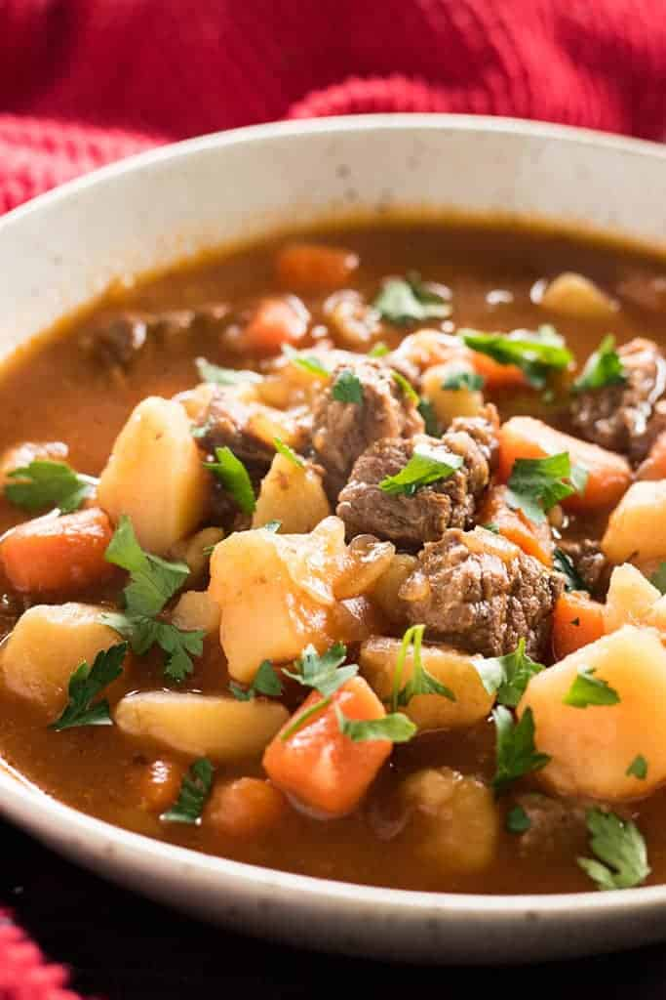

[Instant Pot] Beef Stew

Description
Delicious Beef Stew recipe optimized for ease of use with an Instant Pot.
Beef Stew, haven't tried this one yet, hopefully, it will become one of my favorites.
Ingredients
- 1 1/2 pounds beef stew meat
- 1 tbsp olive oil
- 1 tsp salt
- 1 tsp pepper
- 1 tsp italian seasoning
- 2 tbsp worcestershire sauce
- 3 cloves garlic, minced
- 1 large onion, chopped
- 1 16oz bag babby carrots, sliced
- 1 lb potatoes, cubed
- 2 1/2 cups beef broth
- 1 10oz can tomato sauce
- 2 tbsps cornstarch
- 2 tbsps water
Instructions
- Add the olive oil to the instant pot and turn on the saute function. When the oil starts to sizzle add the meat and season with the salt, pepper, and Italian seasoning.
- Cook the meat until Browned on all sides.
- Add the beef broth to the instant pot and use a spoon to scrape the brown bits from the bottom of the pan.
- Add the Worcestershire sauce, garlic, onion, carrots, potatoes, and tomato sauce.
- Close the lid and steam valve on the instant pot.
- Cook on high pressure for 35 minutes, then allow the pressure to release naturally for 10 minutes before doing a quick release.
- Mix together the cornstarch and cold water in a small bowl and stir into the stew until thickened.
And there we have it Beef Stew